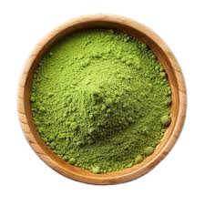

Biological Foundations
Craft & Processing
Sensory Expression

Cultivar (品種)
Genetic lineage regulates chlorophyll density, amino acid synthesis, and catechin balance. Shade-adapted cultivars retain elevated L-theanine levels, producing refined sweetness and delicate bitterness.
Soil Composition (土壌)
Balanced minerals and optimal nitrogen enhance amino acid synthesis, improving nutrient uptake and subtle sweetness persistence.
Harvest Timing (一番茶)
First flush leaves deliver maximal L-theanine and minimal fiber, resulting in a smooth, elegant texture and gentle astringency.
Shading Strategy (覆下栽培)
Pre-harvest shading suppresses catechin formation, deepening umami and preserving a lustrous jade hue.
Processing (製茶工程)
Immediate steaming halts oxidation, preserving chlorophyll and maintaining a refined flavor balance.
Stone Milling (石臼挽き)
Slow granite milling protects aroma and particle integrity, ensuring a luxurious, creamy mouthfeel.
Freshness Management (鮮度管理)
Cold storage slows oxidation, preserving clarity of sweetness and vibrant color.
Water Character (湯質)
Soft water enhances perceived sweetness, while minerals sharpen catechin structure.
Color (色)
Deep jade vibrancy reflects high chlorophyll concentration and preserved leaf integrity.
Aroma (香り)
Fresh grassy aldehydes and subtle marine notes define a refined aroma.
Umami (旨味)
L-theanine stimulates glutamate receptors, creating a deep, lingering sweetness.
Bitterness (渋み)
Balanced catechins provide structural tension and sophisticated complexity.
Texture (質感)
Ultra-fine particles create stable suspension and ceremonial creaminess.